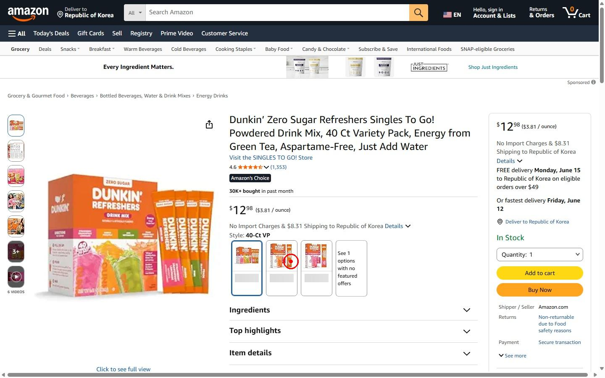
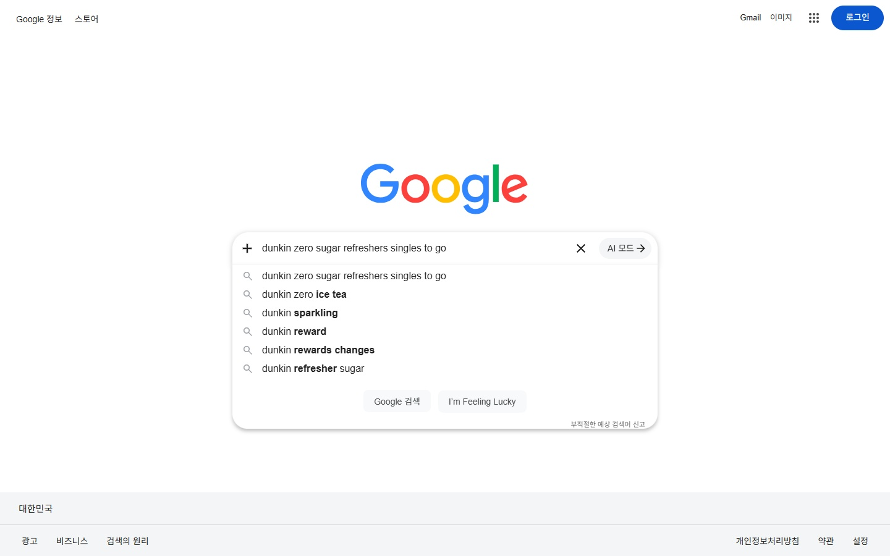
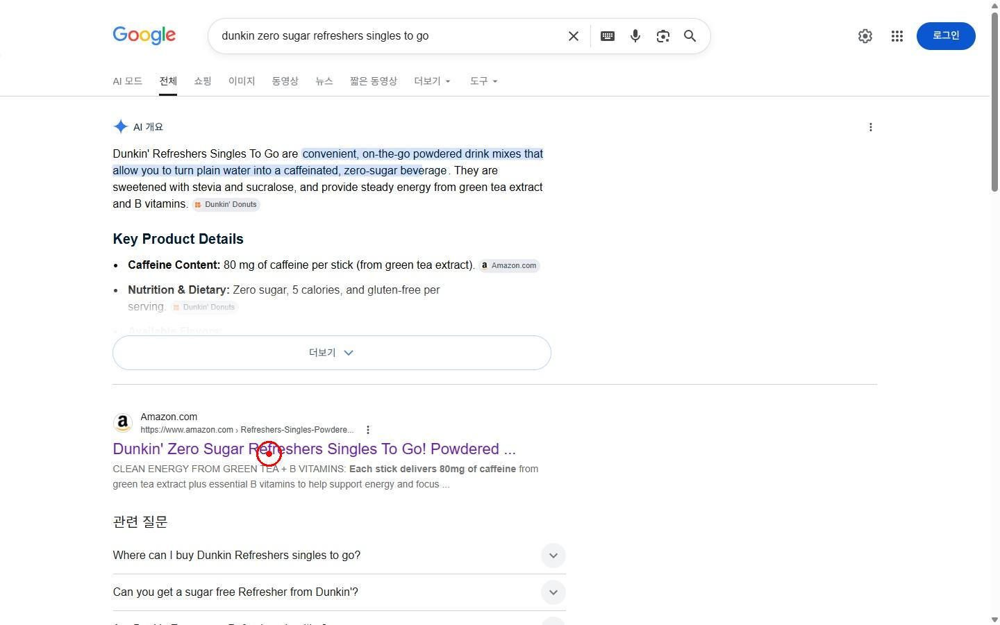
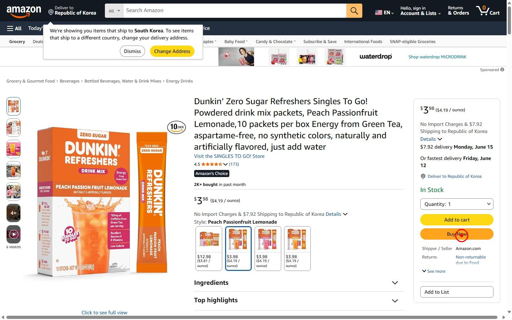
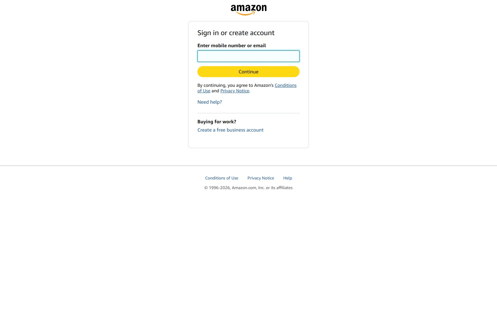
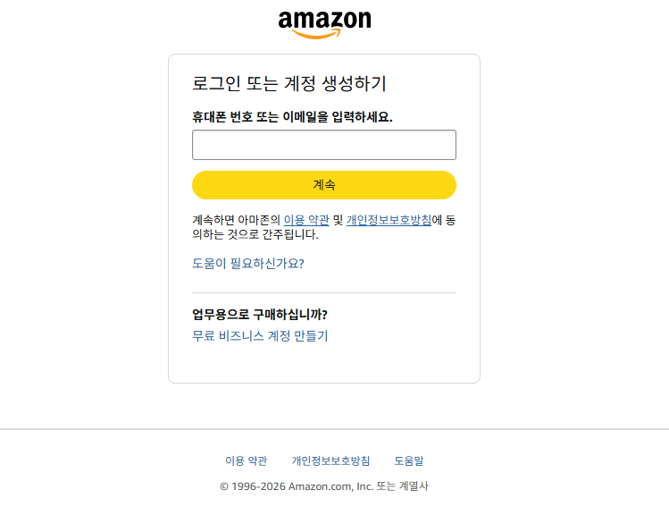
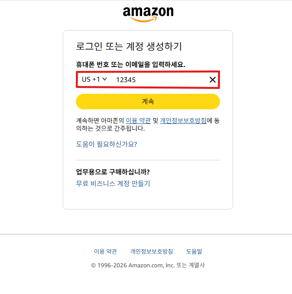
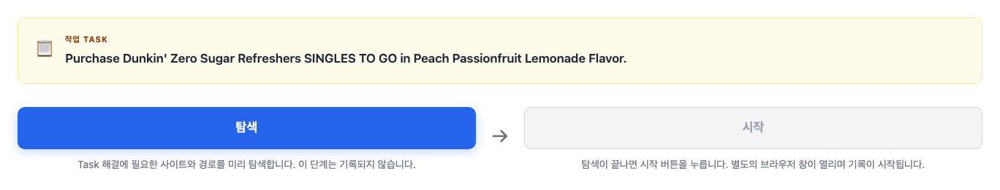
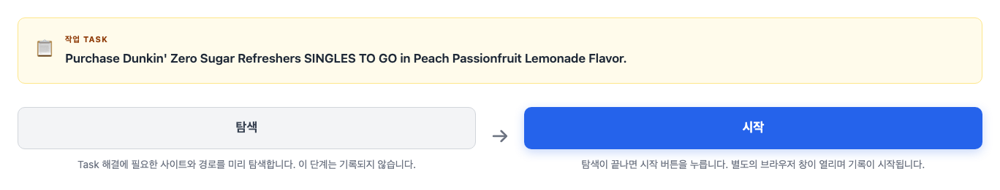

여러분이 할 일은 웹에서 수행할 수 있는 구체적인 목표가 담긴 Task를 직접 수행하고, 그 일련의 과정을 기록으로 남기는 것입니다. 각 행동 하나하나는 Step이 되고, 처음부터 끝까지 완성된 전체 과정을 Trajectory라고 부릅니다. 여러분이 남긴 Trajectory는 나중에 AI가 사람처럼 웹을 다루도록 학습하는 데 사용됩니다.
Step 생성 과정
하나의 Step은 아래 세 가지 요소로 구성됩니다.
Observation자동 저장— Action 직전의 화면이 자동으로 저장됩니다.
Action자동 저장— 클릭·타이핑·스크롤 등 수행한 행동이 자동으로 저장됩니다.
Thought직접 작성— Action 직후 활성화되는 입력창에 해당 행동을 한 이유를 작성합니다.

맛 옵션 선택 화면
Observation 자동 저장
← 왼쪽 스크린샷
Action 자동 저장
left_click (692, 622)
Thought 직접 작성
"To select the Task-specified option among the available flavor variants, the Peach Passionfruit Lemonade option is clicked on the product detail page."
생성해야하는 Trajectory 예시
Purchase Dunkin' Zero Sugar Refreshers SINGLES TO GO in Peach Passionfruit Lemonade Flavor.
Step 1
type "dunkin zero sugar refreshers singles to go"
To search for the product, the core keywords of the Task (brand, line, and product name) are entered into the Google search bar.
Step 2

key ["Enter"]
To execute the search and navigate to the results page, the Enter key is pressed.
Step 3

left_click (387, 653)
To navigate to the Amazon product detail page for Dunkin' Refreshers Singles To Go, the corresponding product link is clicked from the search results list.
Step 4
left_click (692, 622)
To select the Task-specified option among the available flavor variants, the Peach Passionfruit Lemonade option is clicked on the product detail page.
Step 5

left_click (1298, 662)
With the Peach Passionfruit Lemonade option confirmed as selected, the "Buy Now" button is clicked to proceed with the purchase.
Step 6

terminate (success)
Upon reaching the login/payment information entry screen, which represents the final step immediately preceding purchase completion, the session is terminated here without proceeding with the actual transaction, in consideration of safety.
고품질 Trajectory 를 위한 세 가지 기준
1
Task 목표와 관련된 행동만 수행해야한다
Task 에서 요구하는 사이트·정보 외 다른 곳으로 이동하지 마세요.
✕ Wrong
제품을 구매해야 함에도 검색 결과에서 Instagram 링크를 클릭해 Task 와 무관한 콘텐츠로 이동함.
2
Thought 는 구체적으로 작성해야 한다
Thought 는 해당 행동을 한 이유를 의미합니다. 아래 형식에 맞춰 한두 문장으로 작성해 주세요.
“[무엇이] 보여서, [무엇을] 하려고, [이 행동을] 했다.”
좋은 Thought
"To navigate to the Amazon product detail page for Dunkin' Refreshers Singles To Go, the corresponding product link is clicked from the search results list."
나쁜 Thought
"To solve the given task accurately"
→ 너무 일반적이어서 아무 step 에나 맞는 내용임.
3
실제 개인정보·결제 정보를 입력하지 않아야한다
결제·로그인 화면에 도달하면 실명·이메일·카드 정보 등 실제 개인정보를 입력하지 말고 작업을 종료해 주세요.
✓ Good

실제 정보를 입력하지 않고 종료해 개인정보 노출과 실제 결제가 모두 발생하지 않음.
✕ Wrong

실제 결제·로그인 정보를 입력해 개인정보 노출이 발생함.
Trajectory 생성 연습하기
실제 작업 전에 도구 사용 방법을 아래 흐름과 함께 익혀보세요.
Trajectory 생성 도구 사용 순서
0
"탐색" 버튼을 눌러 Task를 파악합니다
탐색 버튼을 누르면 브라우저 창이 열립니다.
Task 해결에 필요한 사이트와 경로를 충분히 탐색한 후, 브라우저 창을 닫습니다.
이 단계는 기록되지 않으며, 본 작업을 시작하기 전 준비 단계입니다.

1
"시작" 버튼을 누르면 별도의 브라우저 창이 열립니다
시작 버튼을 누르면 잠시 후 별도의 브라우저 창이 열립니다.
이 창에서 수행하는 모든 행동이 Trajectory로 기록됩니다.

2
열린 브라우저에서 Task를 수행합니다
열린 브라우저에서 Task의 목표를 달성하기 위한 행동(클릭, 타이핑, 스크롤 등)을 수행합니다.
각 행동의 Action과 행동 직전의 화면인 Observation은 자동 저장됩니다.
3
각 행동마다 Thought 입력창이 활성화됩니다
행동을 수행하는 즉시 Thought 입력창이 활성화됩니다.
방금 수행한 행동의 이유를 직접 작성한 후, 저장 후 계속 버튼을 눌러 다음 행동을 이어서 수행합니다.
https://www.amazon.com/dp/B0C3JLKX7Q
Observation (자동 저장)
Trajectory Annotator
Action
left_click (692, 622)
Thought 직접 작성
💡 무엇이 보여서 → 무엇을 하려고 → 어떤 행동을 했다
4
목표에 도달했다고 판단되면 브라우저 창을 닫고, 마지막 step의 결과와 이유를 작성합니다
더 이상 수행할 행동이 없고 목표에 도달했거나 종료가 적절하다고 판단되면 브라우저 창을 닫습니다.
창을 닫는 순간, 마지막 step이 자동으로 terminate 행동으로 기록되며 완료 폼이 나타납니다.
여기서 고르는 결과(성공/실패/다시하기)가 마지막 step의 상태가 되고,
작성하는 이유가 해당 step의 Thought로 저장됩니다.
아래 세 가지 중 해당하는 결과를 선택하세요.
성공Task의 목표를 달성했을 때
실패Task의 목표를 달성할 수 없을 때 (ex. Task가 꼭 특정 사이트를 요구하는데, 접속이 안되는 경우)
다시하기처음부터 다시해야 할 때 (ex. Task 해결에 필요한 사이트가 잠시 접속이 안되는 경우)
지금부터 연습을 시작합니다
📋
연습 Task
Purchase Dunkin' Zero Sugar Refreshers SINGLES TO GO in Peach Passionfruit Lemonade Flavor.
Task 해결에 필요한 사이트와 경로를 미리 둘러봅니다. 이 단계는 기록되지 않습니다.
탐색이 끝나면 시작 버튼을 누릅니다. 별도의 브라우저 창이 열리며 연습 기록이 시작됩니다.

_marked_mod.png)
.png)